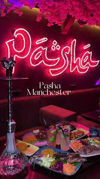
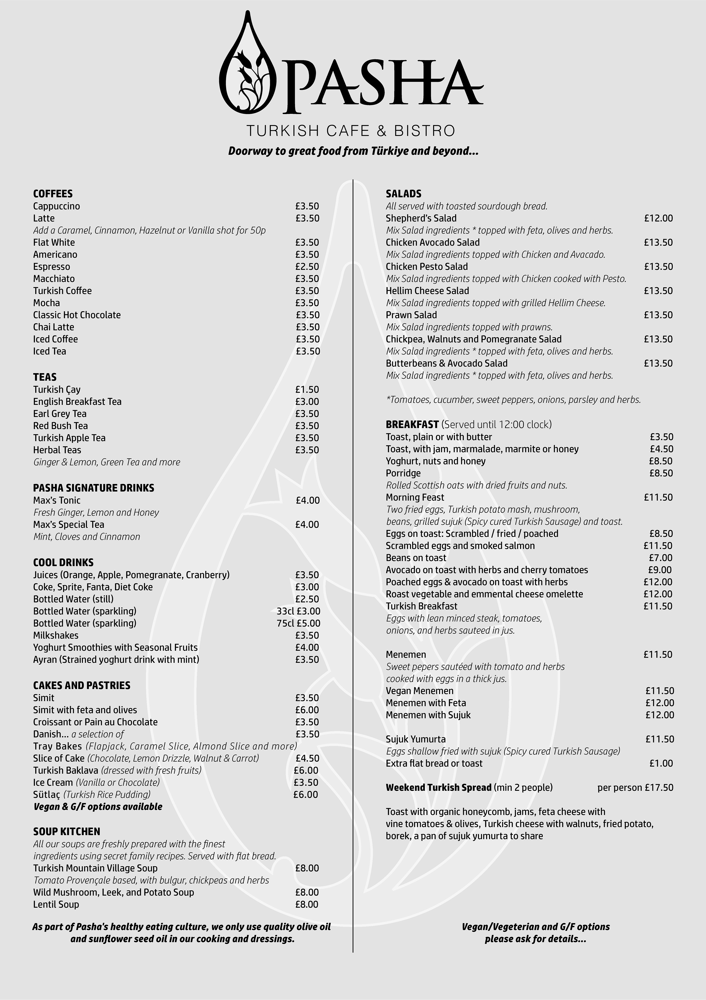
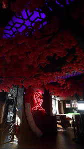

For those looking for a unique and relaxing setting to enjoy flavoured tobacco through a water pipe, often known as a shisha or hookah, Pasha Vibes Shisha Bar is a well-liked place. This paper will give a summary of the Pasha Vibes Shisha Bar, emphasising its atmosphere, food, and patrons' experiences. It will also go over the background and appeal of shisha bars as well as how Pasha Vibes Shisha Bar came to be known as a major player in the business.Shisha flavours at Pasha Vibes Shisha Bar are differed, satisfying a wide range of palates. In addition to more unusual selections like strawberry, watermelon, and mango, customers can select from classic Middle Eastern flavours like mint, apple, and grape. To add to the shisha experience, the menu also offers a selection of refreshments, such as tea, coffee, and soft drinks. In addition, the bar periodically has live acts like belly dancers and DJs to improve the atmosphere and provide patrons with an unforgettable experiences. Because Pasha Vibes Shisha Bar is so committed to giving its customers an amazing experience, it has developed a loyal clientele. The trained personnel at the bar makes sure that every customer gets to enjoy their preferred shisha flavour by being present at all times to provide advice and support. To further enhance overall client pleasure, the business keeps an environment that is clean and well-maintained. Pasha Vibes Shisha Bar's relaxed environment and abundance of social opportunities make it a popular choice for both major events and informal get-togethers.
In Appetizers they have Crispy Calamari: Grilled calamari with marinara sauce and lemon wedges. Fried Zucchini Flowers: Crispy fried zucchini flowers served with creamy aioli. Mushroom Stew: Large mushroom caps mixed with garlic, breadcrumbs and cheese and cooked to perfection. Crispy Calamari: Grilled calamari with marinara sauce and lemon wedges. Fried Zucchini Flowers: Crispy fried zucchini flowers served with creamy aioli. Mushroom Stew: Large mushroom caps mixed with garlic, breadcrumbs and cheese and cooked to perfection. In Dessert they have Chocolate Lava Cake: A rich, moist chocolate cake with a molten center, served with a scoop of vanilla ice cream. Tiramisu: A classic Italian dessert made with layers of espresso-soaked risottos and topped with a creamy mascarpone mixture. Lemon-Raspberry Cheesecake: A lemon-raspberry cheesecake topped with fresh strawberries in a caramel crust.
The history of Pasha Vibes goes back to the concept of "Pasha". The word Pasha originated in the Ottoman Empire, where it was used as a title denoting high authority and power, similar to a prince or ruler. Over time, the word grew to denote power, prestige and way of life.In modern usage, "Pasha Vibes" is associated with an aesthetic and a lifestyle. It often conveys an aura of luxury, sophistication and kindness. This concept has been adopted by a variety of industries, including fashion, travel, hospitality and entertainment. The emergence of social media is a great opportunity to celebrate Pasha Vibes. Speakers and celebrities often use this term to refer to projects that exude luxury and simplicity. From exotic locations to high-end trends and luxury experiences, Pasha Vibes captures the passion for the world's best.
